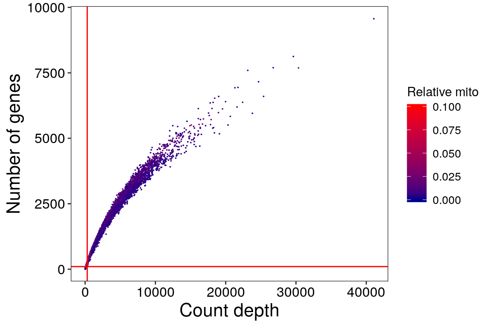

The basic scflow workflow for sample QC begins with the import of the feature-barcode sparse matrix with read_feature_barcode_matrix. The metadata for the sample is then imported from a sample sheet with retrieve_sample_metadata. A SingleCellExperiment object is created from the matrix and the metadata using generate_sce which is then annotated with both gene and cell-level data using annotate_sce. We then filter the SingleCellExperiment to select only cells and genes meeting our QC criteria using filter_sce. We can then optionally find singlets in our filtered SingleCellExperiment using find_singlets before filtering them out again with filter_sce. A complete QC report can then be generated using report_qc_sce before saving the filtered and quality-controlled SingleCellExperiment with write_sce.
══ Reading feature-barcode matrix ═══════════════════════════════════════════════════════════════════════════════════════════════════════════════════════════════════════ Error : Cannot write to fd (system error 9, Bad file descriptor) @client.c:149
#> Reading: ~/Documents/ms-sc/data/raw/testfbmatrix/outs/raw_feature_bc_matrix/barcodes.tsv.gzError in mycall(sym_write, fd, data) : Cannot write to fd (system error 9, Bad file descriptor) @client.c:149
#> Reading: ~/Documents/ms-sc/data/raw/testfbmatrix/outs/raw_feature_bc_matrix/features.tsv.gzError in mycall(sym_write, fd, data) : Cannot write to fd (system error 9, Bad file descriptor) @client.c:149
#> Reading: ~/Documents/ms-sc/data/raw/testfbmatrix/outs/raw_feature_bc_matrix/matrix.mtx.gzError in mycall(sym_write, fd, data) : Cannot write to fd (system error 9, Bad file descriptor) @client.c:149
#> ✔ Imported sparse matrix: 737280 cols x 33694 rows.Next we retrieve the metadata by pointing to a Sample Sheet and specifying a unique identifier (unique_id) in a specific column (id_colname): -
metadata <- retrieve_metadata(
unique_id = "MS542",
id_colname = "individual",
samplesheet_path = "~/Documents/ms-sc/refs/sample_metadata.tsv"
)══ Retrieving sample metadata ═══════════════════════════════════════════════════════════════════════════════════════════════════════════════════════════════════════════ Reading ~/Documents/ms-sc/refs/sample_metadata.tsv
Error in mycall(sym_write, fd, data) : Cannot write to fd (system error 9, Bad file descriptor) @client.c:149
#> ✔ Twenty metadata variables loaded for individual='MS542'Error in mycall(sym_write, fd, data) : Cannot write to fd (system error 9, Bad file descriptor) @client.c:149
#> individual: MS542 (factor)Error in mycall(sym_write, fd, data) : Cannot write to fd (system error 9, Bad file descriptor) @client.c:149
#> batch: 2 (integer)Error in mycall(sym_write, fd, data) : Cannot write to fd (system error 9, Bad file descriptor) @client.c:149
#> group: High (factor)Error in mycall(sym_write, fd, data) : Cannot write to fd (system error 9, Bad file descriptor) @client.c:149
#> diagnosis: MS (factor)Error in mycall(sym_write, fd, data) : Cannot write to fd (system error 9, Bad file descriptor) @client.c:149
#> coverage: Low (factor)Error in mycall(sym_write, fd, data) : Cannot write to fd (system error 9, Bad file descriptor) @client.c:149
#> batches: 1 (integer)Error in mycall(sym_write, fd, data) : Cannot write to fd (system error 9, Bad file descriptor) @client.c:149
#> sex: F (factor)Error in mycall(sym_write, fd, data) : Cannot write to fd (system error 9, Bad file descriptor) @client.c:149
#> age: 76 (integer)Error in mycall(sym_write, fd, data) : Cannot write to fd (system error 9, Bad file descriptor) @client.c:149
#> PMI: 12 (integer)Error in mycall(sym_write, fd, data) : Cannot write to fd (system error 9, Bad file descriptor) @client.c:149
#> duration: 35 (integer)Error in mycall(sym_write, fd, data) : Cannot write to fd (system error 9, Bad file descriptor) @client.c:149
#> capdate: 20181030 (integer)Error in mycall(sym_write, fd, data) : Cannot write to fd (system error 9, Bad file descriptor) @client.c:149
#> prepdate: 20181031 (integer)Error in mycall(sym_write, fd, data) : Cannot write to fd (system error 9, Bad file descriptor) @client.c:149
#> seqdate: 201811 (integer)Error in mycall(sym_write, fd, data) : Cannot write to fd (system error 9, Bad file descriptor) @client.c:149
#> nucleicount: 1.96 (numeric)Error in mycall(sym_write, fd, data) : Cannot write to fd (system error 9, Bad file descriptor) @client.c:149
#> cdnaconc: 0.584 (numeric)Error in mycall(sym_write, fd, data) : Cannot write to fd (system error 9, Bad file descriptor) @client.c:149
#> libraryconc: 13.1 (numeric)Error in mycall(sym_write, fd, data) : Cannot write to fd (system error 9, Bad file descriptor) @client.c:149
#> MLS: 394 (integer)Error in mycall(sym_write, fd, data) : Cannot write to fd (system error 9, Bad file descriptor) @client.c:149
#> RIN: 5.3 (numeric)Error in mycall(sym_write, fd, data) : Cannot write to fd (system error 9, Bad file descriptor) @client.c:149
#> ap: Posterior (factor)Error in mycall(sym_write, fd, data) : Cannot write to fd (system error 9, Bad file descriptor) @client.c:149
#> aplevel: 2 (integer)For downstream analyses it’s important that the variable classes are correctly specified. Carefully inspect the metadata classes in brackets. In the above example we see that the batch, capdate, prepdate, seqdate, and aplevel were imported as integer rather than factor variables. Let’s correct this by reloading the metadata, this time specifying the correct variable classes for these variables: -
var_classes <- c(
batch = "factor",
capdate = "factor",
prepdate = "factor",
seqdate = "factor",
aplevel = "factor"
)
metadata <- retrieve_metadata(
unique_id = "MS542",
id_colname = "individual",
samplesheet_path = "~/Documents/ms-sc/refs/sample_metadata.tsv",
colClasses = var_classes
)══ Retrieving sample metadata ═══════════════════════════════════════════════════════════════════════════════════════════════════════════════════════════════════════════ Reading ~/Documents/ms-sc/refs/sample_metadata.tsv
Error in mycall(sym_write, fd, data) : Cannot write to fd (system error 9, Bad file descriptor) @client.c:149
#> ✔ Twenty metadata variables loaded for individual='MS542'Error in mycall(sym_write, fd, data) : Cannot write to fd (system error 9, Bad file descriptor) @client.c:149
#> individual: MS542 (factor)Error in mycall(sym_write, fd, data) : Cannot write to fd (system error 9, Bad file descriptor) @client.c:149
#> batch: 2 (integer)Error in mycall(sym_write, fd, data) : Cannot write to fd (system error 9, Bad file descriptor) @client.c:149
#> group: High (factor)Error in mycall(sym_write, fd, data) : Cannot write to fd (system error 9, Bad file descriptor) @client.c:149
#> diagnosis: MS (factor)Error in mycall(sym_write, fd, data) : Cannot write to fd (system error 9, Bad file descriptor) @client.c:149
#> coverage: Low (factor)Error in mycall(sym_write, fd, data) : Cannot write to fd (system error 9, Bad file descriptor) @client.c:149
#> batches: 1 (integer)Error in mycall(sym_write, fd, data) : Cannot write to fd (system error 9, Bad file descriptor) @client.c:149
#> sex: F (factor)Error in mycall(sym_write, fd, data) : Cannot write to fd (system error 9, Bad file descriptor) @client.c:149
#> age: 76 (integer)Error in mycall(sym_write, fd, data) : Cannot write to fd (system error 9, Bad file descriptor) @client.c:149
#> PMI: 12 (integer)Error in mycall(sym_write, fd, data) : Cannot write to fd (system error 9, Bad file descriptor) @client.c:149
#> duration: 35 (integer)Error in mycall(sym_write, fd, data) : Cannot write to fd (system error 9, Bad file descriptor) @client.c:149
#> capdate: 20181030 (integer)Error in mycall(sym_write, fd, data) : Cannot write to fd (system error 9, Bad file descriptor) @client.c:149
#> prepdate: 20181031 (integer)Error in mycall(sym_write, fd, data) : Cannot write to fd (system error 9, Bad file descriptor) @client.c:149
#> seqdate: 201811 (integer)Error in mycall(sym_write, fd, data) : Cannot write to fd (system error 9, Bad file descriptor) @client.c:149
#> nucleicount: 1.96 (numeric)Error in mycall(sym_write, fd, data) : Cannot write to fd (system error 9, Bad file descriptor) @client.c:149
#> cdnaconc: 0.584 (numeric)Error in mycall(sym_write, fd, data) : Cannot write to fd (system error 9, Bad file descriptor) @client.c:149
#> libraryconc: 13.1 (numeric)Error in mycall(sym_write, fd, data) : Cannot write to fd (system error 9, Bad file descriptor) @client.c:149
#> MLS: 394 (integer)Error in mycall(sym_write, fd, data) : Cannot write to fd (system error 9, Bad file descriptor) @client.c:149
#> RIN: 5.3 (numeric)Error in mycall(sym_write, fd, data) : Cannot write to fd (system error 9, Bad file descriptor) @client.c:149
#> ap: Posterior (factor)Error in mycall(sym_write, fd, data) : Cannot write to fd (system error 9, Bad file descriptor) @client.c:149
#> aplevel: 2 (integer)With the metadata imported with the correct variable classes, and the previously loaded sparse matrix, we can generate our SingleCellExperiment object: -
══ Generating SingleCellExperiment ══════════════════════════════════════════════════════════════════════════════════════════════════════════════════════════════════════ Error in mycall(sym_write, fd, data) : Cannot write to fd (system error 9, Bad file descriptor) @client.c:149
#> ✔ SingleCellExperiment object generatedError in mycall(sym_write, fd, data) : Cannot write to fd (system error 9, Bad file descriptor) @client.c:149
#> 33694 gene x 737280 cells, annotated with 21 metadata variables (incl. barcode).The SingleCellExperiment object was succesfully created and we can now proceed with annotation.
class: SingleCellExperiment dim: 33694 737280 metadata(2): metadata scflow_steps assays(1): counts rownames(33694): ENSG00000000003 ENSG00000000005 … ENSG00000283118 ENSG00000283125 rowData names(1): ensembl_gene_id colnames(737280): MS542_2_AAACCTGAGAAACCAT-1 MS542_2_AAACCTGAGAAACCGC-1 … MS542_2_TTTGTCATCTTTAGTC-1 MS542_2_TTTGTCATCTTTCCTC-1 colData names(21): barcode individual … ap aplevel reducedDimNames(0): spikeNames(0):
In scflow we specify all of our QC preferences and cutoffs with the annotate_sce command. This will also produce plots in the sce@metadata slot allowing rapid revision and optimization of QC parameters. Let’s start with the default parameters by simply providing the SingleCellExperiment object to the annotate_sce function: -
sce <- annotate_sce(
sce,
ensembl_mapping_file = "~/Documents/ms-sc/src/ensembl-ids/ensembl_mappings.tsv"
)══ Annotating SingleCellExperiment ══════════════════════════════════════════════════════════════════════════════════════════════════════════════════════════════════════ ══ Annotating SingleCellExperiment genes ════════════════════════════════════════════════════════════════════════════════════════════════════════════════════════════════ Reading ~/Documents/ms-sc/src/ensembl-ids/ensembl_mappings.tsv
Error in mycall(sym_write, fd, data) : Cannot write to fd (system error 9, Bad file descriptor) @client.c:149
#> ℹ Note: not all ensembl_ids were found (700/33694 not found).── Annotating SingleCellExperiment cells ──────────────────────────────────────────────────────────────────────────────────────────────────────────────────────────────── Error in mycall(sym_write, fd, data) : Cannot write to fd (system error 9, Bad file descriptor) @client.c:149
#> ✔ SingleCellExperiment cells were successfully annotated with: Error in mycall(sym_write, fd, data) : Cannot write to fd (system error 9, Bad file descriptor) @client.c:149
#> ● total_counts
#> ● total_features_by_counts
#> ● qc_metric_min_library_size
#> ● qc_metric_min_features
#> ● pc_mito
#> ● qc_metric_pc_mito_ok
#> ● pc_ribo
#> ● qc_metric_pc_ribo_ok
#> ● qc_metric_passedError in mycall(sym_write, fd, data) : Cannot write to fd (system error 9, Bad file descriptor) @client.c:149
#> ✔ SingleCellExperiment genes were successfully annotated with: Error in mycall(sym_write, fd, data) : Cannot write to fd (system error 9, Bad file descriptor) @client.c:149
#> ● gene_biotype
#> ● gene
#> ● percentage_gene_gc_content
#> ● qc_metric_ensembl_mapped
#> ● qc_metric_is_mito
#> ● qc_metric_is_ribo
#> ● qc_metric_mapped_keep
#> ● qc_metric_mito_keep
#> ● qc_metric_ribo_keep
#> ● qc_metric_n_cells_expressing
#> ● qc_metric_is_expressive
#> ● qc_metric_gene_passed══ Generating QC plots for SingleCellExperiment ═════════════════════════════════════════════════════════════════════════════════════════════════════════════════════════ Error in mycall(sym_write, fd, data) : Cannot write to fd (system error 9, Bad file descriptor) @client.c:149
#> Generating QC plots and appending to metadata.Error in mycall(sym_write, fd, data) : Cannot write to fd (system error 9, Bad file descriptor) @client.c:149
#> Generating QC summary table and appending to metadata.Error in mycall(sym_write, fd, data) : Cannot write to fd (system error 9, Bad file descriptor) @client.c:149 Error in mycall(sym_write, fd, data) : Cannot write to fd (system error 9, Bad file descriptor) @client.c:149
A list of QC plots are available to browse in the sce@metadata$qc_plots, e.g.

At this stage we regenerate the SingleCellExperiment with generate_sce and re-annotate with annotate_sce until satisfied the QC cutoffs are suitable.
The next step is to filter the SingleCellExperiment with filter_sce: -
══ Filtering SingleCellExperiment ═══════════════════════════════════════════════════════════════════════════════════════════════════════════════════════════════════════ Error in mycall(sym_write, fd, data) : Cannot write to fd (system error 9, Bad file descriptor) @client.c:149
#> Pre-filtered SingleCellExperiment contains 33694 genes and 737280 cells.Error in mycall(sym_write, fd, data) : Cannot write to fd (system error 9, Bad file descriptor) @client.c:149
#> ✔ ✔ 13/13 mitochondrial genes were dropped. Error in mycall(sym_write, fd, data) : Cannot write to fd (system error 9, Bad file descriptor) @client.c:149
#> ✔ ✔ 0/49 ribosomal genes were dropped. Error in mycall(sym_write, fd, data) : Cannot write to fd (system error 9, Bad file descriptor) @client.c:149
#> ✔ ✔ 700/700 unmapped genes were dropped. Error in mycall(sym_write, fd, data) : Cannot write to fd (system error 9, Bad file descriptor) @client.c:149
#> ✔ ✔ 18109 non-expressive genes were dropped. Error in mycall(sym_write, fd, data) : Cannot write to fd (system error 9, Bad file descriptor) @client.c:149
#> ✔ ✔ 15442/33694 genes passed QC. Error in mycall(sym_write, fd, data) : Cannot write to fd (system error 9, Bad file descriptor) @client.c:149
#> ✔ ✔ 723865 cells failed QC and were dropped: - Error in mycall(sym_write, fd, data) : Cannot write to fd (system error 9, Bad file descriptor) @client.c:149 Error in mycall(sym_write, fd, data) : Cannot write to fd (system error 9, Bad file descriptor) @client.c:149
#> Library size QC: PASS: 13494/FAIL: 723786
#> Number of genes QC: PASS: 55616/FAIL: 681664
#> Mitochondria counts proportion QC: PASS: 487990/FAIL: 45225
#> Ribosomal counts proportion QC: PASS: 533215/FAIL: 0
#> Overall cell QC: PASS: 13415/FAIL: 723865Error in mycall(sym_write, fd, data) : Cannot write to fd (system error 9, Bad file descriptor) @client.c:149
#> ✔ SingleCellExperiment was filtered successfully to ✔ 15442 genes and ✔ 13415 cells. Error in mycall(sym_write, fd, data) : Cannot write to fd (system error 9, Bad file descriptor) @client.c:149 Error in mycall(sym_write, fd, data) : Cannot write to fd (system error 9, Bad file descriptor) @client.c:149
At this stage we may wish to identify singlets in the SingleCellExperiment and discard any multiplets. In scflow we simply run find_singlets and specify our preferred multiplet identification algorithm. Here we will use doubletfinder: -
knitr::opts_chunk$set(echo = FALSE)
sce <- find_singlets(sce, "doubletfinder", pK = 0.005, vars_to_regress_out = c("nCount_RNA", "pc_mito"))Now we can filter out these multiplets with filter_sce: -
Finally we produce a report with report_qc_sce (this takes a few minutes): -
And save our SingleCellExperiment: -